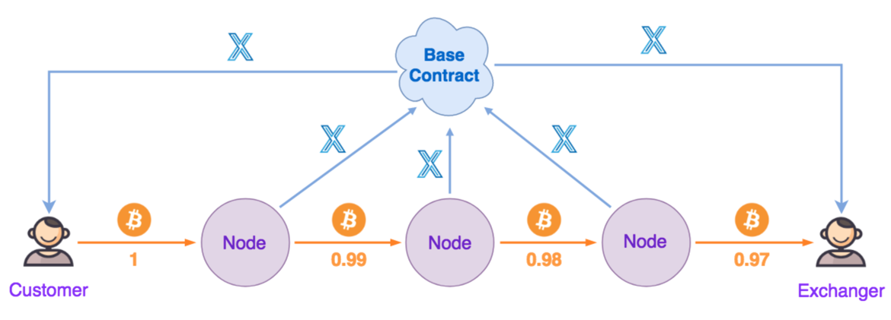

7 代币系统设计
7.1 名称与设计目标
作为一个多角色共建的生态系统，LITEX需要一系列激励规则来确保系统的健康运转和快速发展，并将生态产生的价值回馈给全体参与者。为此LITEX设计了一种加密代币LITEX Token（符号为LXT）来承载这一功能。
7.2 LXT经济体系
7.2.1 产生和消灭
LXT目前基于以太坊智能合约 ERC20 标准生成，总数量为 20亿（2,000,000,000）枚，由系统一次性配置完成，永不增发。LXT没有消灭机制。
7.2.2 供给和需求
供给：根据交易金额按一定比例掉落LXT给消费者、兑换者等生态各方；
需求：
结点：通过向系统质押LXT来获得对应体量的经营权，并且不断补充在经营过程中对LXT的消耗，消耗部分作为供给来源；
用户：使用LXT支付可以获得价格优惠（手续费优惠、减免等）。

上图近似描述LXT在生态中的流向，数据仅为描述用，不代表实际数值。实际设计中的根据不同国家和地区的政策、税法等因素以及价格预言机提供的参数，手续费的比例、LXT消耗和掉落的比例都会有所差异。另外作为ERC20 Token，LXT在生态分配势必产生成本，作为有正向收益的系统，LITEX完全可以承担这一成本，并通过合理的机制设计进一步降低成本。
7.3 LXT发行计划
| 数量 | 比例 | 用途 | 说明 |
|---|---|---|---|
| 700,000,000 | 35% | 预售 | 面向机构投资者等，用于LITEX项目后续开发、人才招募、市场推广等。此部分资金的使用需要定期公示。 |
| 300,000,000 | 15% | 生态建设 | 用于空投、Node激励等生态启动需求。 |
| 600,000,000 | 30% | 发展基金 | 用于发展合作伙伴、团队建设等。此部分资金的使用需要基金会决议，并提前公示。 |
| 300,000,000 | 15% | 创始团队 | 回报创始团队在加密货币领域的探索和开发以及今后维护LITEX等产品技术和运营发展作出的努力。代币发行时此部分将被智能合约锁定，1个月后解锁，每月解锁此部分的1/36，分36个月解锁完成。 |
| 100,000,000 | 5% | 顾问及合作机构 | 面向需要合作的各种机构以及顾问等。 |